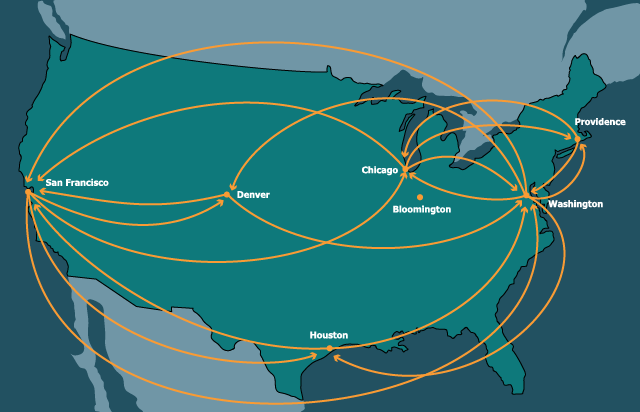

Introducing Graphs
In From Acyclicity to Cycles we introduced a special kind of sharing: when the data become cyclic, i.e., there exist values such that traversing other reachable values from them eventually gets you back to the value at which you began. Data that have this characteristic are called graphs.Technically, a cycle is not necessary to be a graph; a tree or a DAG is also regarded as a (degenerate) graph. In this section, however, we are interested in graphs that have the potential for cycles.
Lots of very important data are graphs. For instance, the people and connections in social media form a graph: the people are nodes or vertices and the connections (such as friendships) are links or edges. They form a graph because for many people, if you follow their friends and then the friends of their friends, you will eventually get back to the person you started with. (Most simply, this happens when two people are each others’ friends.) The Web, similarly is a graph: the nodes are pages and the edges are links between pages. The Internet is a graph: the nodes are machines and the edges are links between machines. A transportation network is a graph: e.g., cities are nodes and the edges are transportation links between them. And so on. Therefore, it is essential to understand graphs to represent and process a great deal of interesting real-world data.
Graphs are important and interesting for not only practical but also principled reasons. The property that a traversal can end up where it began means that traditional methods of processing will no longer work: if it blindly processes every node it visits, it could end up in an infinite loop. Therefore, we need better structural recipes for our programs. In addition, graphs have a very rich structure, which lends itself to several interesting computations over them. We will study both these aspects of graphs below.
Understanding Graphs
Consider again the binary trees we saw earlier [Re-Examining
Equality]. Let’s now try to distort the definition of a “tree” by
creating ones with cycles, i.e., trees with nodes that point back to
themselves (in the sense of
identical).
As we saw earlier [From
Acyclicity to Cycles], it is not completely straightforward to
create such a structure, but what we saw earlier [Streams From Functions]
can help us here, by letting us suspend the evaluation of the cyclic
link. That is, we have to not only use
rec,
we must also use a function to delay evaluation. In turn, we have to
update the annotations on the fields. Since these are not going to be
“trees” any more, we’ll use a name that is suggestive but not outright
incorrect:
data BinT:
| leaf
| node(v, l :: ( -> BinT), r :: ( -> BinT))
endNow let’s try to construct some cyclic values. Here are a few examples:
rec tr = node("rec", lam(): tr end, lam(): tr end)
t0 = node(0, lam(): leaf end, lam(): leaf end)
t1 = node(1, lam(): t0 end, lam(): t0 end)
t2 = node(2, lam(): t1 end, lam(): t1 end)Now let’s try to compute the size of a
BinT.
Here’s the obvious program:
fun sizeinf(t :: BinT) -> Number:
cases (BinT) t:
| leaf => 0
| node(v, l, r) =>
ls = sizeinf(l())
rs = sizeinf(r())
1 + ls + rs
end
end(We’ll see why we call it
sizeinf
in a moment.)
Do Now!
What happens when we call
sizeinf(tr)?
It goes into an infinite loop: hence the
inf
in its name.
There are two very different meanings for “size”. One is, “How many
times can we traverse an edge?” The other is, “How many distinct nodes
were constructed as part of the data structure?” With trees, by
definition, these two are the same. With a DAG the former exceeds the
latter but only by a finite amount. With a general graph, the former can
exceed the latter by an infinite amount. In the case of a datum like
tr,
we can in fact traverse edges an infinite number of times. But the total
number of constructed nodes is only one! Let’s write this as test cases
in terms of a
size
function, to be defined:
check:
size(tr) is 1
size(t0) is 1
size(t1) is 2
size(t2) is 3
endIt’s clear that we need to somehow remember what nodes we have visited previously: that is, we need a computation with “memory”. In principle this is easy: we just create an extra data structure that checks whether a node has already been counted. As long as we update this data structure correctly, we should be all set. Here’s an implementation.
fun sizect(t :: BinT) -> Number:
fun szacc(shadow t :: BinT, seen :: List<BinT>) -> Number:
if has-id(seen, t):
0
else:
cases (BinT) t:
| leaf => 0
| node(v, l, r) =>
ns = link(t, seen)
ls = szacc(l(), ns)
rs = szacc(r(), ns)
1 + ls + rs
end
end
end
szacc(t, empty)
endThe extra parameter,
seen,
is called an accumulator, because it “accumulates” the list of seen
nodes.Note that this could just as well be a set; it doesn’t have to be a
list. The support function it needs checks whether
a given node has already been seen:
fun has-id<A>(seen :: List<A>, t :: A):
cases (List) seen:
| empty => false
| link(f, r) =>
if f <=> t: true
else: has-id(r, t)
end
end
endHow does this do? Well,
sizect(tr)
is indeed
1,
but
sizect(t1)
is
3
and
sizect(t2)
is
7!
Do Now!
Explain why these answers came out as they did.
The fundamental problem is that we’re not doing a very good job of remembering! Look at this pair of lines:
ls = szacc(l(), ns)
rs = szacc(r(), ns)The nodes seen while traversing the left branch are effectively
forgotten, because the only nodes we remember when traversing the right
branch are those in
ns:
namely, the current node and those visited “higher up”. As a result, any
nodes that “cross sides” are counted twice.
The remedy for this, therefore, is to remember every node we visit. Then, when we have no more nodes to process, instead of returning only the size, we should return all the nodes visited until now. This ensures that nodes that have multiple paths to them are visited on only one path, not more than once. The logic for this is to return two values from each traversal—the size and all the visited nodes—and not just one.
fun size(t :: BinT) -> Number:
fun szacc(shadow t :: BinT, seen :: List<BinT>)
-> {n :: Number, s :: List<BinT>}:
if has-id(seen, t):
{n: 0, s: seen}
else:
cases (BinT) t:
| leaf => {n: 0, s: seen}
| node(v, l, r) =>
ns = link(t, seen)
ls = szacc(l(), ns)
rs = szacc(r(), ls.s)
{n: 1 + ls.n + rs.n, s: rs.s}
end
end
end
szacc(t, empty).n
endSure enough, this function satisfies the above tests.
Representations
The representation we’ve seen above for graphs is certainly a start
towards creating cyclic data, but it’s not very elegant. It’s both
error-prone and inelegant to have to write
lam
everywhere, and remember to apply functions to
()
to obtain the actual values. Therefore, here we explore other
representations of graphs that are more conventional and also much
simpler to manipulate.
There are numerous ways to represent graphs, and the choice of representation depends on several factors:
- The structure of the graph, and in particular, its density. We will discuss this further later [Measuring Complexity for Graphs].
- The representation in which the data are provided by external sources. Sometimes it may be easier to simply adapt to their representation; in particular, in some cases there may not even be a choice.
- The features provided by the programming language, which make some representations much harder to use than others.
In [Several Variations on Sets], we explore the idea of having many different representations for one datatype. As we will see, this is very true of graphs as well. Therefore, it would be best if we could arrive at a common interface to process graphs, so that all later programs can be written in terms of this interface, without overly depending on the underlying representation.
In terms of representations, there are three main things we need:
- A way to construct graphs.
- A way to identify (i.e., tell apart) nodes or vertices in a graph.
- Given a way to identify nodes, a way to get that node’s neighbors in the graph.
Any interface that satisfies these properties will suffice. For simplicity, we will focus on the second and third of these and not abstract over the process of constructing a graph.
Our running example will be a graph whose nodes are cities in the United States and edges are direct flight connections between them:

Links by Name
Here’s our first representation. We will assume that every node has a unique name (such a name, when used to look up information in a repository of data, is sometimes called a key). A node is then a key, some information about that node, and a list of keys that refer to other nodes:
type Key = String
data KeyedNode:
| keyed-node(key :: Key, content, adj :: List<Key>)
end
type KNGraph = List<KeyedNode>
type Node = KeyedNode
type Graph = KNGraph(Here we’re assuming our keys are strings.)
Here’s a concrete instance of such a
graph:The prefix
kn-
stands for “keyed node”.
kn-cities :: Graph = block:
knWAS = keyed-node("was", "Washington", [list: "chi", "den", "saf", "hou", "pvd"])
knORD = keyed-node("chi", "Chicago", [list: "was", "saf", "pvd"])
knBLM = keyed-node("bmg", "Bloomington", [list: ])
knHOU = keyed-node("hou", "Houston", [list: "was", "saf"])
knDEN = keyed-node("den", "Denver", [list: "was", "saf"])
knSFO = keyed-node("saf", "San Francisco", [list: "was", "den", "chi", "hou"])
knPVD = keyed-node("pvd", "Providence", [list: "was", "chi"])
[list: knWAS, knORD, knBLM, knHOU, knDEN, knSFO, knPVD]
endGiven a key, here’s how we look up its neighbor:
fun find-kn(key :: Key, graph :: Graph) -> Node:
matches = for filter(n from graph):
n.key == key
end
matches.first # there had better be exactly one!
endExercise
Convert the comment in the function into an invariant about the datum. Express this invariant as a refinement and add it to the declaration of graphs.
With this support, we can look up neighbors easily:
fun kn-neighbors(city :: Key, graph :: Graph) -> List<Key>:
city-node = find-kn(city, graph)
city-node.adj
endWhen it comes to testing, some tests are easy to write. Others, however, might require describing entire nodes, which can be unwieldy, so for the purpose of checking our implementation it suffices to examine just a part of the result:
check:
ns = kn-neighbors("hou", kn-cities)
ns is [list: "was", "saf"]
map(_.content, map(find-kn(_, kn-cities), ns)) is
[list: "Washington", "San Francisco"]
endLinks by Indices
In some languages, it is common to use numbers as names. This is especially useful when numbers can be used to get access to an element in a constant amount of time (in return for having a bound on the number of elements that can be accessed). Here, we use a list—which does not provide constant-time access to arbitrary elements—to illustrate this concept. Most of this will look very similar to what we had before; we’ll comment on a key difference at the end.
First, the
datatype:The prefix
ix-
stands for “indexed”.
data IndexedNode:
| idxed-node(content, adj :: List<Number>)
end
type IXGraph = List<IndexedNode>
type Node = IndexedNode
type Graph = IXGraphOur graph now looks like this:
ix-cities :: Graph = block:
inWAS = idxed-node("Washington", [list: 1, 4, 5, 3, 6])
inORD = idxed-node("Chicago", [list: 0, 5, 6])
inBLM = idxed-node("Bloomington", [list: ])
inHOU = idxed-node("Houston", [list: 0, 5])
inDEN = idxed-node("Denver", [list: 0, 5])
inSFO = idxed-node("San Francisco", [list: 0, 4, 3])
inPVD = idxed-node("Providence", [list: 0, 1])
[list: inWAS, inORD, inBLM, inHOU, inDEN, inSFO, inPVD]
endwhere we’re assuming indices begin at
0.
To find a node:
fun find-ix(idx :: Key, graph :: Graph) -> Node:
lists.get(graph, idx)
endWe can then find neighbors almost as before:
fun ix-neighbors(city :: Key, graph :: Graph) -> List<Key>:
city-node = find-ix(city, graph)
city-node.adj
endFinally, our tests also look similar:
check:
ns = ix-neighbors(3, ix-cities)
ns is [list: 0, 5]
map(_.content, map(find-ix(_, ix-cities), ns)) is
[list: "Washington", "San Francisco"]
endSomething deeper is going on here. The keyed nodes have intrinsic
keys: the key is part of the datum itself. Thus, given just a node, we
can determine its key. In contrast, the indexed nodes represent
extrinsic keys: the keys are determined outside the datum, and in
particular by the position in some other data structure. Given a node
and not the entire graph, we cannot know for what its key is. Even given
the entire graph, we can only determine its key by using
identical,
which is a rather unsatisfactory approach to recovering fundamental
information. This highlights a weakness of using extrinsically keyed
representations of information. (In return, extrinsically keyed
representations are easier to reassemble into new collections of data,
because there is no danger of keys clashing: there are no intrinsic keys
to clash.)
A List of Edges
The representations we have seen until now have given priority to
nodes, making edges simply a part of the information in a node. We
could, instead, use a representation that makes edges primary, and nodes
simply be the entities that lie at their
ends:The prefix
le-
stands for “list of edges”.
data Edge:
| edge(src :: String, dst :: String)
end
type LEGraph = List<Edge>
type Graph = LEGraphThen, our flight network becomes:
le-cities :: Graph =
[list:
edge("Washington", "Chicago"),
edge("Washington", "Denver"),
edge("Washington", "San Francisco"),
edge("Washington", "Houston"),
edge("Washington", "Providence"),
edge("Chicago", "Washington"),
edge("Chicago", "San Francisco"),
edge("Chicago", "Providence"),
edge("Houston", "Washington"),
edge("Houston", "San Francisco"),
edge("Denver", "Washington"),
edge("Denver", "San Francisco"),
edge("San Francisco", "Washington"),
edge("San Francisco", "Denver"),
edge("San Francisco", "Houston"),
edge("Providence", "Washington"),
edge("Providence", "Chicago") ]Observe that in this representation, nodes that are not connected to other nodes in the graph simply never show up! You’d therefore need an auxilliary data structure to keep track of all the nodes.
To obtain the set of neighbors:
fun le-neighbors(city :: Key, graph :: Graph) -> List<Key>:
neighboring-edges = for filter(e from graph):
city == e.src
end
names = for map(e from neighboring-edges): e.dst end
names
endAnd to be sure:
check:
le-neighbors("Houston", le-cities) is
[list: "Washington", "San Francisco"]
endHowever, this representation makes it difficult to store complex information about a node without replicating it. Because nodes usually have rich information while the information about edges tends to be weaker, we often prefer node-centric representations. Of course, an alternative is to think of the node names as keys into some other data structure from which we can retrieve rich information about nodes.
Abstracting Representations
We would like a general representation that lets us abstract over the
specific implementations. We will assume that broadly we have available
a notion of
Node
that has
content,
a notion of
Keys
(whether or not intrinsic), and a way to obtain the neighbors—a list of
keys—given a key and a graph. This is sufficient for what follows.
However, we still need to choose concrete keys to write examples and
tests. For simplicity, we’ll use string keys [Links by Name].
Measuring Complexity for Graphs
Before we begin to define algorithms over graphs, we should consider how to measure the size of a graph. A graph has two components: its nodes and its edges. Some algorithms are going to focus on nodes (e.g., visiting each of them), while others will focus on edges, and some will care about both. So which do we use as the basis for counting operations: nodes or edges?
It would help if we can reduce these two measures to one. To see whether that’s possible, suppose a graph has \(k\) nodes. Then its number of edges has a wide range, with these two extremes:
- No two nodes are connected. Then there are no edges at all.
- Every two nodes is connected. Then there are essentially as many edges as the number of pairs of nodes.
The number of nodes can thus be significantly less or even significantly more than the number of edges. Were this difference a matter of constants, we could have ignored it; but it’s not. As a graph tends towards the former extreme, the ratio of nodes to edges approaches \(k\) (or even exceeds it, in the odd case where there are no edges, but this graph is not very interesting); as it tends towards the latter, it is the ratio of edges to nodes that approaches \(k^2\). In other words, neither measure subsumes the other by a constant independent of the graph.
Therefore, when we want to speak of the complexity of algorithms over graphs, we have to consider the sizes of both the number of nodes and edges. In a connected graphA graph is connected if, from every node, we can traverse edges to get to every other node., however, there must be at least as many edges as nodes, which means the number of edges dominates the number of nodes. Since we are usually processing connected graphs, or connected parts of graphs one at a time, we can bound the number of nodes by the number of edges.